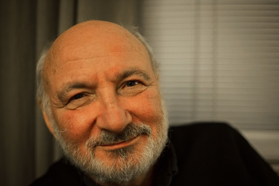
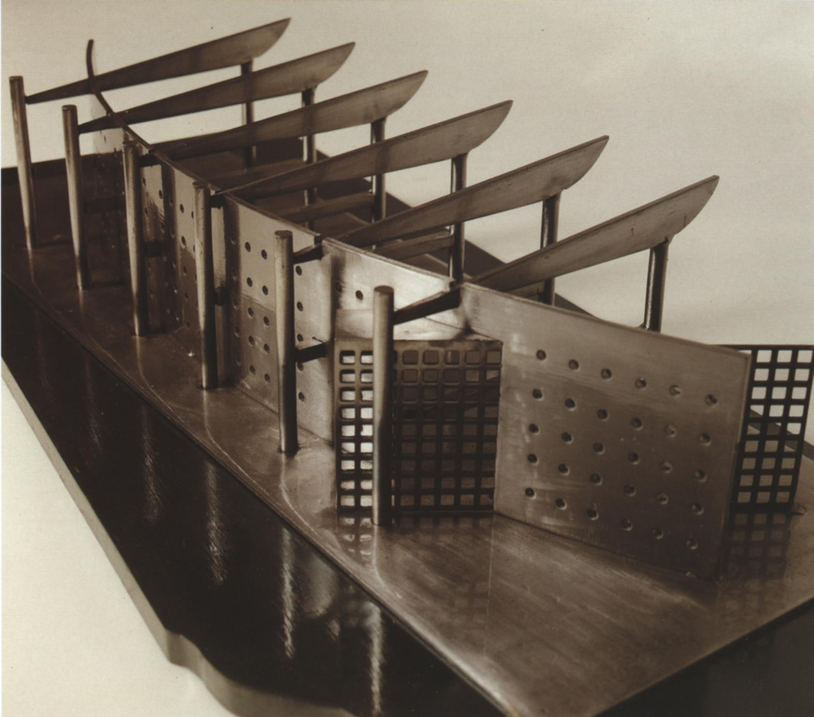

Gilles Dupré (1946-2018)¶
2018-04-27
Gilles Dupré était architecte avant d’être mari ou père. Il pouvait interrompre ses vacances, traverser la France de nuit, tout changer d’un projet qu’il disait avoir conclu, batailler jusqu’à plus d’heure avec les façades. Il dessinait avant d’écrire, noircissait de croquis tous les ronds de bières, toutes les nappes en papier. Il peignait. Il allait voir toutes les expositions à Paris où ailleurs, lisait tous les livres, organisait des voyages pour l’ordre des architectes. Il écrivait peu mais savait toujours retrouver le livre où l’oeuvre qui traduisait le mieux sa pensée. L’essentiel était d’avoir un projet et de tout faire pour le concrétiser. Il était important de laisser une trace, le reste était secondaire. Féru de jazz, de bandes dessinées, il lisait la nuit, vous surprenait en sortant un livre de son sac « Tiens ça m’a fait penser à toi. »
Collaboration avec son père 1974-1980
Gilles Dupré commença sa carrière dans le propre cabinet de son père. Il fut rejoint quelques années plus tard par son frère. La collaboration entre son père et lui était parfois houleuse et le nom de son père était parfois envahissant.
Création de son propre cabinet 1980-1985
1980, Gilles Dupré crée sa propre structure, 4 rue Delvincourt. Il emploie son frère et les deux déménagent dans le même immeuble qui inclut aussi l’agence. Il y a toujours eu moins d’une minute du lit jusqu’à la table à dessin. Le cabinet Gilles Dupré vivait essentiellement de la commande publique et des concours d’architecture. C’est le début d’une mécanique efficace dont une des belles réussites est le groupe scolaire de Givet (1984). Gilles faisait tout le temps des croquis, chaque projet débutait par des croquis, de plus en plus grands, avec de plus en plus de détails. Il se finissait quelques heures avant le rendu, l’agence restait allumée toute la nuit, des silhouettes devant les tables à dessin. Il a commencé sa collection de Saint-James troués par la cendre des cigarettes vissées sur la bouche sans main libre pour les secouer. Gilles était un homme d’idées, il faisait peu de compromis avec l’esthétique d’un bâtiment qu’il construisait. Les réunions de chantiers étaient parfois rudes mais toujours dans l’objectif de mettre en oeuvre ce qu’il avait imaginé, même si cela s’opposait parfois à celui qui avait commandé le bâtiment. Cette exigence n’a jamais varié par la suite.
Les années fastes, l’exubérance 1985-2005
La première grande réussite fut sans conteste l’Hôtel de Police de Reims. Elle poussa le cabinet à changer d’échelle, à son apogée, il eut une dizaine d’employés, il ouvrit un second cabinet à Paris, un rêve pour lui, de mettre un pied dans la capitale et de s’ouvrir vers de plus gros projets, voire de se confronter à ceux dont il admirait l’oeuvre. Il fit des allers-retours toutes les semaines entre Charleville et Paris pendant quelques décennies. Il était capable de monter sur un tabouret en pleine charrettes et faire toute une pièce de théâtre devant son équipe ou de répliquer : « arrête de travailler, va lire et te cultiver ». Il vivait, et partageait son envie de vivre. C’est l’époque où il fut nommé architecte conseil.
La fin d’un chapitre 2005-2014
L’informatisation arrivée dans les années 1990 et surtout dans Les années 2000 a profondément changé la façon de travailler des architectes. Gilles Dupré a dû adapter la sienne. Il a toujours privilégié sa créativité. Il a réduit la voilure et réalisé moins de projet. Le dernier grand projet fut l’extension commissariat de Police de Charleville en 2012. Sa dernière toile est exposée dans la salle d’attente. Les idées étaient toujours là mais l’énergie lui manquait pour les mener à leur terme avec l’exigence qui était la sienne.
Citation, extraite d’un courrier.
Mon vieux maître virtuel qu’est Niemeyer, lorsqu’il fait un croquis, la réalisation est à l’image de son croquis, sans fausses notes. Est-il possible d’avoir un bureau de contrôle qui suive les fantasmes d’un vieil étudiant en architecture ?
Quelques réalisations
1976 - Base nautique des Vieilles Forges
1978 - Base nautique de Bairon
1984 - Groupe Scolaire à Givet
1984 - Cinéma à Hirson
1984 - Salle de spectacles à Revin
1988 - Hôtel de Police de Reims
1990 - Extension du lycée Chanzy à Charleville
1992 - Lycée d’Enseignement Général et Technique Châlons sur Marne
2005 - IUT à Charleville
2008 - Centre Hospitalier de Rethel
2012 - Commissariat de Police à Charleville
Maquette de l’extension du Lycée Chanzy
Hôtel de Police de Reims

Suite…
Tout d’abord, je vous remercie d’être venus si nombreux pour rendre un dernier hommage à Papa ou Gilles comme vous préférez. Permettez-nous, nous qui avons si souvent été sa main d’écriture, de lui prêter quelques mots afin que ce ne soit pas un arrêt sur images mais le début de ce dont il a été si souvent la source : une idée.
Papa était un artiste. Enfin, je crois. C’est lui qui me l’a dit. Il n’avait pas toujours les idées claires mais était toujours incisif quand il s’agissait d’architecture. Une discussion typique avec lui, c’était un bistrot pas trop chic, une bière, du vin, une nappe en papier et un steak tartare. On lui parlait beaucoup, il noircissait la nappe de petits dessins. Il adorait que je lui parle de maths, il n’y comprenait rien mais je crois que c’est ça qui lui plaisait beaucoup. Papa, c’était plein d’idées contradictoires qui s’affrontaient constamment. C’est comme ça qu’on invente. Papa c’est quoi la mer ?
Va voir Casanova de Fellini. C’est un simple voile posé sur un courant d’air. Ecoute-moi ça. Tu vois les éléphants, le cirque ?
Il mettait la musique de Nino Rota. Sur la fin, il était un peu ce cinéaste de Huit et demi ou cet architecte du Ventre. Il aimait ces paraboles d’un monde à l’autre. Le commissariat de Police de Charleville fut sa dernière grande oeuvre. Tous ses enfants l’ont visité. Tout le monde peut y voir sa dernière toile. C’est un peu celle qui l’a achevé.
Allo Clémence ? Non c’est Xavier. Je ne comprends rien à ce téléphone. Allo Hadrien ? Non c’est Clémence. Allo Xavier ? Non c’est Hadrien. Je ne comprends rien à ce que ton frère raconte. Il parle trop vite.
Oserais-je te dire : je ne voulais pas d’enfant… Mais je suis très content d’en avoir.
Il me sortait cette tirade souvent. Sans doute une façon de dire que je m’écartais de l’essentiel. Les discussions ressemblaient à un concert de Keith Jarreth, une bataille contre un piano mal accordé parsemées de quelques répliques, beaucoup d’hésitations et de phrases qui se répètent.
Que te dire ?
Il n’était pas parfait. On s’en fout. L’essentiel est ailleurs, vivre c’est créer. C’est tout. Les cours sont des pièces de théâtres, les recettes de cuisines sont des poèmes, les voitures ont des chauffeurs, les chapeaux ont avalé des éléphants, les poteaux cachent son bâtiment. Foutus ingénieurs, impossible de rêver avec eux.
Quand la maîtresse demandait ce qu’était une charrette, je répondais que c’est quand on travaille la nuit pour construire un bâtiment.
Ce n’est pas plutôt quelque chose tiré par un cheval ?
Si vous voulez, mais le cheval c’est papa et il y a beaucoup de monde dans la charrette.
Ah oui ?
Oui, oui, et après minuit, ils sautent tous le plus haut possible. Le lendemain, ils vont tous au restaurant et papa est obligé de manger l’addition parce qu’il a peur qu’on la lui vole. Après on va acheter des paraboots pour aller sur le chantier pour voir si tout le monde arrive à colorier le terrain selon le croquis de papa. Papa dit alors qu’il manque un truc alors on va voir une expo de Miro pour le retrouver. On est rentré à la maison puis il est monté sur le toit pour boucher une fuite. Quand il est redescendu, il a dit « Ca fait très Coop Himmelb(l)au ». Mais comme je ne connaissais pas, il a fallu aller à Pompidou et comme j’étais toujours inculte, on a poussé jusqu’au Portugal voir son maître Alvaro. On s’est retrouvé après le voyage au café de Portzamparc.
Font chier, Impossible d’écouter du jazz, on se barre. On va à Graphigro, j’ai besoin de calque jaune.
Un Calder plus loin, on est passé chez Sennelier pour les carnets de croquis. On est rentré. Il a fallu cuisiner.
Papa elle n’est pas pratique ta casserole !
M’en fous, c’est beau.
Gilles Dupré, né le 24 décembre 1946, décédé le 22 avril 2018.